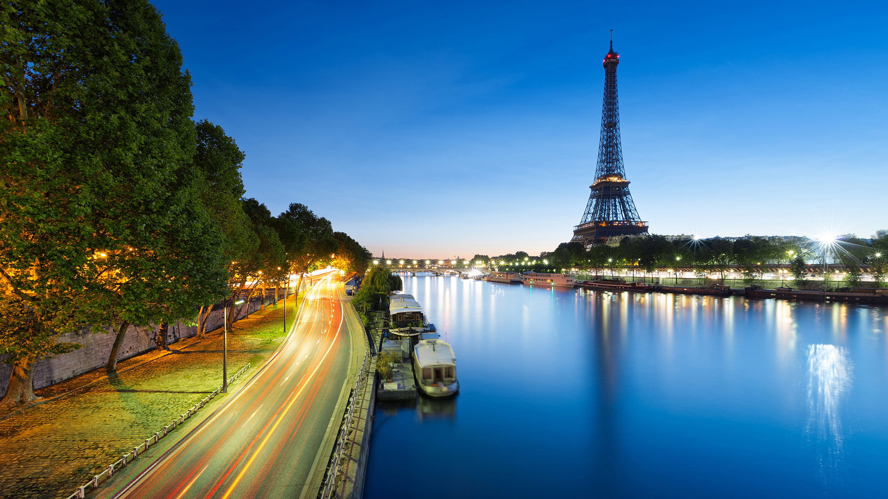
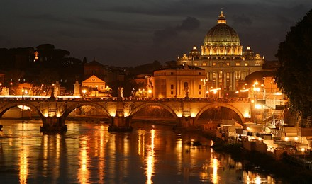
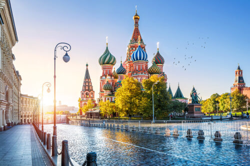
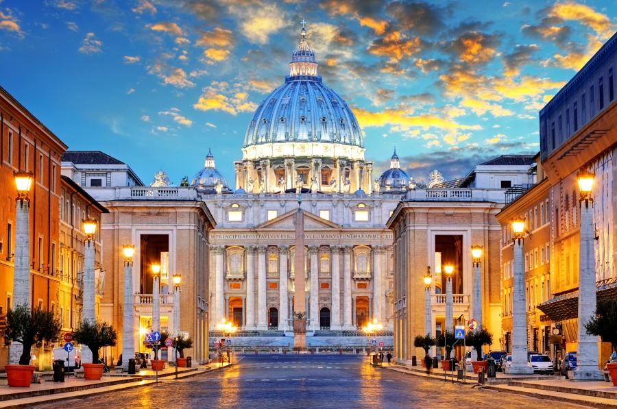

Paryż
Moskwa to największe miasto Rosji, położone w Centralnym Okręgu Federalnym.
Liczy 12 655 050 mieszkańców, przy czym cała aglomeracja
liczy 17,2 mln mieszkańców (2020). Jeden z najważniejszych ośrodków politycznych,
gospodarczych, kulturowych, religijnych, finansowych, edukacyjnych, komunikacyjnych
oraz turystycznych Rosji i Świata.

Rzym

Rzym to stolica i największe miasto Włoch, położone w środkowej części kraju
nad rzeką Tyber i Morzem Śródziemnym. Centrum administracyjne (comune speciale)
ma powierzchnię 1287 km² i liczbę ludności 2 825 661, będąc trzecim co do
wielkości miastem Unii Europejskiej. Miasto Stołeczne Rzym ma 4 331 856 mieszkańców.
Moskwa
Moskwa to największe miasto Rosji, położone w Centralnym Okręgu Federalnym.
Liczy 12 655 050 mieszkańców, przy czym cała aglomeracja
liczy 17,2 mln mieszkańców (2020). Jeden z najważniejszych ośrodków politycznych,
gospodarczych, kulturowych, religijnych, finansowych, edukacyjnych, komunikacyjnych
oraz turystycznych Rosji i Świata.

Watykan

Najmniejsze państwo świata pod względem powierzchni i najmniejsze niepodległe
państwo pod względem liczby ludności.Watykan to siedziba najwyższych władz Kościoła
katolickiego, gdzie rezyduje papież. Obywatele Watykanu to głównie dostojnicy
kościelni, księża, zakonnice oraz Gwardia Szwajcarska z rodzinami. Oprócz tego do
pracy przychodzi około 3000 osób mieszkających poza murami Watykanu (pracownicy
poczty, radia, gazety, sklepów, dworca kolejowego i służby medycznej). Obywatelstwo
Watykanu traci się z momentem, kiedy przestaje się w nim mieszkać.